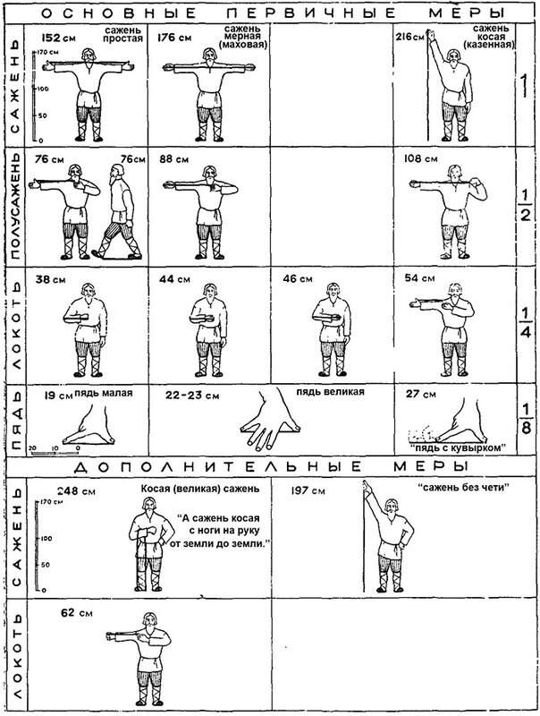

А нынче!.. Что к моим ногам Вас привело?
А. С. Пушкин. Евг. Онегин. 8, 45.
Если в предыдущих заметках мы говорили о французской по преимуществу единице длины – туазе, то сегодня речь пойдет о поистине международной единице, которая присутствует в наследии всех почти цивилизаций – о единице, равной длине стопы взрослого человека, которую мы условно назовем английским термином фут, как по причине того, что именно фут стал основой реформы Петра I в области метрологии, так и потому, что англичане уже в наше время проявляют наибольшее упорство в удержании этой единицы на плаву.
Учитывая специфику наших занятий, не будем рассматривать очень уж глубокую историю этой единицы, также как и современное ее состояние. Нас будет интересовать промежуток времени от XIII до XVIII века, когда галеростроение вошло в период «инженерной» науки, появились чертежи и технические описания галер с размерами. Вот для понимания этих размеров мы и заварили всю эту кашу с единицами измерения.
Ясно, что выбор конкретной ступни для измерения задача не из самых простых. Хорошо, если это ступня короля франков, о чем мы говорили в прошлый раз, здесь конкурентов быть не может, а как быть в удаленном от столицы городке или на корабельной верфи. Англичане, как следует из их национальной мифологии, тоже пытались притянуть к метрологии королевские ноги. Якобы английский фут был стандартизован по длине стопы Генриха I. Но здесь, как видимо и с Шарлеманем, больше от легенды, чем от исторической правды. И потом, уж больно медвежьи лапы были у королей. Сейчас средняя длина стопы человека (европейца) около 24 см. И абсолютное большинство (99,6%) не дотягивает до «футового» стандарта – 12 дюймов или по современным нормам – 30, 48 см. Конечно, предпринимаются попытки объяснить это несоответствие тем фактом, что какой же мастеровой будет мерить расстояние голыми ступнями. Поэтому прибавляют на обувку еще дюйм-другой.. Все равно не выходит.
После этого небольшого вступления поговорим о судьбе фута в России, в надежде, что этот разговор выведет нас на роль фута в кораблестроительных измерениях и в других странах.
Мы так привыкли, что все размеры старых русских кораблей даны в футах и дюймах, что создается впечатление о вечности этих мер длины. На самом деле это не так. Известный исследователь метрологии у наших славянских предков Б.А. Рыбаков не включил стопу в таблицу старинных русских мер.

Изменение системы мер длины, проведенное Петром I было вызвано потребностью не только увязать русские меры с наиболее распространенными в то время английскими мерами, но и упростить соотношения между ними путем небольшого изменения русских мер. Было значительно увеличено количество малых мер, повышавших точность измерения. Делалось это в первую очередь в интересах создания русского флота. Необходимость заказа кораблей за границей, составления необходимых спецификаций, контроля заданных размеров потребовала введения в систему русских единиц фута и дюйма. А для установления целочисленных соотношений русских единиц с вводимыми английскими было произведено изменение числовых значений наших единиц.
Текст Указа Петра по метрологической реформе не найден, но результаты его известны. В литературе начала и середины XVIII в. встречаются прямые свидетельства о 7-футовой сажени. В «Атласе реки Дона, Азовского и Черного морей» адмирала К. Крюйса (1703—1704 гг.) читаем: «Река Камышенка до Перекопи 7000 сажен длиной. Всякая сажень по 7 следов, а всякой след по 12 палцов» («след» — фут, «палец» — дюйм). В руководстве по навигации С. И. Мордвинова 1748 г. указано: «Российская сажень имеет 3 аршина, или 7 футов аглинских» и «Российский аршин имеет аглинских 2 фута и одну треть» В «Универсальной арифметике» Н. Г. Курганова (1757 г.) указывается: «Сажень содержит 7 футов аглинских». В другой книге того же автора (1777 г.) читаем: «В нашей трехаршинной сажене выходит... англисских точно 7 фут» (Цит. по Шостьин «Очерки истории русской метрологии», 1975)
Итак, из двух футов, господствующих в европейском кораблестроении того времени – английского и голландского – предпочтение было отдано первому. Система русских мер стала выражаться следующим образом:
сажень = 7 футам (англ.) = 213,36 см
аршин = 28 дюймам (англ.)
фут (англ.) = 12 дюймам = 30,48 см
дюйм = 10 линиям.
Реформа Петра I, положившего английский фут в основу русских мер длины, имела и теневые стороны. Она внесла некоторую двойственность подразделения в систему русских мер длины (сажень — аршин — вершок и сажень — фут — дюйм). Более того, помимо английского фута применяли французский (парижский) фут, рейнландский (рейнский) и пр. Обе системы мер длины (с аршином и с футом) сохранились в России в течение всего XVIII в. Лишь частично имело место более или менее четкое разграничение сферы использования их. Например, в текстильной промышленности нашли применение почти исключительно аршины и вершки, а в кораблестроении — в основном футы и дюймы. В соответствии с этим размеры судов и их деталей указывали в футах, размеры же парусов — в аршинах; такое разделение встречается иногда в одном и том же документе.
Сфера использования парижского, равного 0,325 м, и рейнландского (0,316 м) футов, не вошедших в систему русских мер, была ограниченной. Первый из них преимущественно применяли ученые Академии наук, что объяснялось влиянием и частичным использованием вообще французской системы мер длины: туаз = 6 футам парижским; фут = 12 дюймам; дюйм==12 линиям; линия =10 точкам. Рейнландский (рейнский) фут нередко использовали, наряду с прочими, М. В. Ломоносов и Г. В. Рихман. Им пользовались также моряки, лаглини которых нередко подразделялись именно на рейнландские футы (Соймонов Ф. И. Экстракт штурманского искусства из наук, принадлежащих к мореплаванию. СПб., 1739).
Английский фут в его нынешнем виде (1/3 ярда или около 30,5 см) появился после нормандского завоевания в 1066 г., возможно при Генрихе I, о котором мы уже говорили. Позже, в XII веке фут практически современной длины был нанесен на основание колонны собора св. Павла в Лондоне и называется с тех пор «Футом св. Павла». С тех пор длина английского фута если и изменялась, то очень незначительно.
(Хотел поместить здесь таблицу перевода всех футов в метрические единицы длины, взяв пример со многих своих френдов: «шоб було». Но решил пока этого не делать, а собрать потом все подобные таблицы в раздел, который так и обозначить: «ШБ»)
Продолжим в следующий раз.